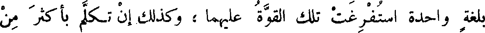
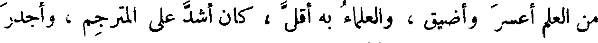
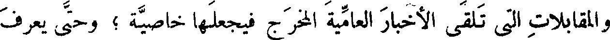
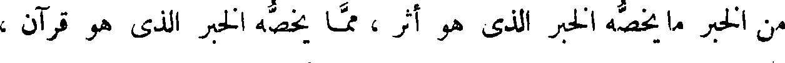
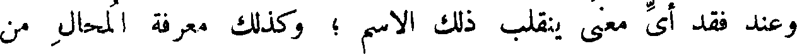

File: 000000.gt.txt (if the image is defective, simply delete all Arabic text and the line will be excluded)

بلغة واحدة استفرغت تلك القوة عليهما؛ وكذلك إن تكلم بأكثر من
File: 000001.gt.txt (if the image is defective, simply delete all Arabic text and the line will be excluded)

لغتين ، وعلى حساب ذلك تكون الترجمة لجميع اللغات . وكلما كان الباب
File: 000002.gt.txt (if the image is defective, simply delete all Arabic text and the line will be excluded)

من العلم أعسر وأضيق ، والعلماء به أقل ، كان أشد على المترجم ، وأجدر
File: 000003.gt.txt (if the image is defective, simply delete all Arabic text and the line will be excluded)

أن يخطئ فيه . ولن تجد البتة مترجما يفي بواحد من هؤلاء العلماء . 39
File: 000004.gt.txt (if the image is defective, simply delete all Arabic text and the line will be excluded)

هذا قولنا في كتب الهندسة، والتنجيم ، والحساب ، واللحون ؛ فكيف
File: 000005.gt.txt (if the image is defective, simply delete all Arabic text and the line will be excluded)

لو كانت هذه الكتب كتب دين وإخبار عن الله - عز وجل- بما يجوز
File: 000006.gt.txt (if the image is defective, simply delete all Arabic text and the line will be excluded)

عليه مما لا يجوز عليه ، حتى يريد أن يتكلم على تصحيح المعاني في الطبائع ،
File: 000007.gt.txt (if the image is defective, simply delete all Arabic text and the line will be excluded)

ويكون ذلك معقودا بالتوحيد ، ويتكلم في وجوه الإخبار واحتمالاته
File: 000008.gt.txt (if the image is defective, simply delete all Arabic text and the line will be excluded)

للوجوه ، ويكون ذلك متضمنا بما يجوز على الله تعالى ، مما لا يجوز ،
File: 000009.gt.txt (if the image is defective, simply delete all Arabic text and the line will be excluded)

وبما يجوز على الناس مما لا يجوز ، وحتى يعلم مستقر العام والخاص ،
File: 000010.gt.txt (if the image is defective, simply delete all Arabic text and the line will be excluded)

والمقابلات التي تلقى الأخبار العامية المخرج فيجعلها خاصية ؛ وحتى يعرف
File: 000011.gt.txt (if the image is defective, simply delete all Arabic text and the line will be excluded)

من الخبر ما يخصه الخبر الذي هو أثر ، مما يخصه الخبر الذي هو قرآن ،
File: 000012.gt.txt (if the image is defective, simply delete all Arabic text and the line will be excluded)

وما يخصه العقل مما تخصه العادة أو الحال الرادة له عن العموم ؛ وحتى يعرف
File: 000013.gt.txt (if the image is defective, simply delete all Arabic text and the line will be excluded)

ما يكون من الخبر صدقا أو كذبا ، وما لا يجوز أن يسمى بصدق ولا كذب ؛
File: 000014.gt.txt (if the image is defective, simply delete all Arabic text and the line will be excluded)

وحتى يعرف اسم الصدق والكذب ، وعلى كم معنى يشتمل ويجتمع ،
File: 000015.gt.txt (if the image is defective, simply delete all Arabic text and the line will be excluded)

وعند فقد أي معنى ينقلب ذلك الاسم ؛ وكذلك معرفة المحال من
File: 000016.gt.txt (if the image is defective, simply delete all Arabic text and the line will be excluded)

الصحيح ، وأي شيء تأويل المحال ؛ وهل يسمى المحال كذبا أم لا يجوز
File: 000017.gt.txt (if the image is defective, simply delete all Arabic text and the line will be excluded)

الرأس والحاجبين وأشفار العينين يكون مع الولادة ، وإنما يعرض لما يتولد
File: 000018.gt.txt (if the image is defective, simply delete all Arabic text and the line will be excluded)

من فضول البدن .
File: 000019.gt.txt (if the image is defective, simply delete all Arabic text and the line will be excluded)

وقد زعم ناس أن حكم شعر الرأس خلاف حكم أشفار العينين ،
File: 000020.gt.txt (if the image is defective, simply delete all Arabic text and the line will be excluded)

وقد ذكرنا ذلك في موضعه من باب القول في الشعر ، وهذه الخصال من
File: 000021.gt.txt (if the image is defective, simply delete all Arabic text and the line will be excluded)

أماكن شعر النساء ، والخصيان والفحولة فيه سواء، وإنما يعرض لسوى
File: 000022.gt.txt (if the image is defective, simply delete all Arabic text and the line will be excluded)

52 ذلك من الشعر الحادث الأصول ، الزائد في النبات. ألا ترى أن المرأة
File: 000023.gt.txt (if the image is defective, simply delete all Arabic text and the line will be excluded)

وكذلك النساء في جميع ذلك .
File: 000024.gt.txt (if the image is defective, simply delete all Arabic text and the line will be excluded)

والمرأة ربما كان في قصاص مقاديم شعر رأسها ارتفاع ، وليس
File: 000025.gt.txt (if the image is defective, simply delete all Arabic text and the line will be excluded)

ذلك بنزع ولا جلح ، إذا لم يكن ذلك حادثا يحدثه الطعن في السن .
File: 000026.gt.txt (if the image is defective, simply delete all Arabic text and the line will be excluded)

وتكون مقاطع شعر رأسه ومنتهى حدود قصاصه، كمقاطع شعر المرأة
File: 000027.gt.txt (if the image is defective, simply delete all Arabic text and the line will be excluded)

ومنتهى قصاصها ، وليس شعرها كلما دنا من موضع الملاسة والانجراد
File: 000028.gt.txt (if the image is defective, simply delete all Arabic text and the line will be excluded)

يكون أرق حتى يقل ويضمحل ، ولكنه ينبت في مقدار ذلك الجلد على
File: 000029.gt.txt (if the image is defective, simply delete all Arabic text and the line will be excluded)

نبات واحد ، ثم ينقطع عند منتهاه انقطاعا واحدا . والمرأة ربما كانت
File: 000030.gt.txt (if the image is defective, simply delete all Arabic text and the line will be excluded)

سبلاء، وتكون لها شعرات رقيقة زغبية كالعذار موصولا بأصداغها ،
File: 000031.gt.txt (if the image is defective, simply delete all Arabic text and the line will be excluded)

ولا يعرض ذلك للخصي إلا من علة في الخصاء ، ولا يرى أبدا بعد مقطع
File: 000032.gt.txt (if the image is defective, simply delete all Arabic text and the line will be excluded)

من صدغيه شيء من الشعر ، لا من رقيقه ولا من كثيفه .
File: 000033.gt.txt (if the image is defective, simply delete all Arabic text and the line will be excluded)

في الحساب ؛ وعلى دس المموه ؛ تعالى الله عز وجل عن ذلك علوا كبيرا .
File: 000034.gt.txt (if the image is defective, simply delete all Arabic text and the line will be excluded)

( خضوع النتاج المركب للطبيعة )
File: 000035.gt.txt (if the image is defective, simply delete all Arabic text and the line will be excluded)

ولو كان أمر النتاج وما يحدث بالتراكيب ويخرج من التزاويج ؛ إلى
File: 000036.gt.txt (if the image is defective, simply delete all Arabic text and the line will be excluded)

تقدير الرأي وما هو أقرب إلى الظن ؛ لكانت الأظلاف(1) تجري مجرى
File: 000037.gt.txt (if the image is defective, simply delete all Arabic text and the line will be excluded)

الحوافر والأخفاف . ألا ترى أن قرابة الضأن من الماعز ؛ كقرابة البخت من
File: 000038.gt.txt (if the image is defective, simply delete all Arabic text and the line will be excluded)

العراب ؛ والحيل من الحمير ! !
File: 000039.gt.txt (if the image is defective, simply delete all Arabic text and the line will be excluded)

وسبيل نتائج الظلف على خلاف ذلك ؛ لأن التيس - على شدة غلمته
File: 000040.gt.txt (if the image is defective, simply delete all Arabic text and the line will be excluded)

- لا يعرض للنعجة [ إلا بالقليل الذي لا يذكر . وكذلك ما يحدث بينهما من
File: 000041.gt.txt (if the image is defective, simply delete all Arabic text and the line will be excluded)

الولد كذلك : إما ألا يتم خلقه ، وإما ألا يعيش (2) ] ؛ وكذلك الكبش
File: 000042.gt.txt (if the image is defective, simply delete all Arabic text and the line will be excluded)

والعنز فضلا عن أن يكون بينهما نتاج (3) لأنه قد يضرب الجنس في الجنس
File: 000043.gt.txt (if the image is defective, simply delete all Arabic text and the line will be excluded)

الذي لا يلقحه ؛ ولا يكون اللقاح إلا بعد ضراب .
File: 000044.gt.txt (if the image is defective, simply delete all Arabic text and the line will be excluded)

وطلب التيس للنعجة قليل (4) وأقل من القليل ؛ وكذلك الكبش
File: 000045.gt.txt (if the image is defective, simply delete all Arabic text and the line will be excluded)

للعنز ؛ وأقل من ذلك أن تتلاقح (5) ولا يبقى ذلك الولد البتة (6)
File: 000046.gt.txt (if the image is defective, simply delete all Arabic text and the line will be excluded)

وقد تجاسر ناس على توليد أبواب من هذا الشكل ؛ فادعوا أمورا ؛
File: 000047.gt.txt (if the image is defective, simply delete all Arabic text and the line will be excluded)

ولم يحفلوا بالتقريع والتكذيب عند مسألة البرهان ! !
File: 000048.gt.txt (if the image is defective, simply delete all Arabic text and the line will be excluded)

( زعم في الزرافة )
File: 000049.gt.txt (if the image is defective, simply delete all Arabic text and the line will be excluded)

زعموا أن الزرافة خلق مركب من بين الناقة الوحشية وبين البقرة الوحشية